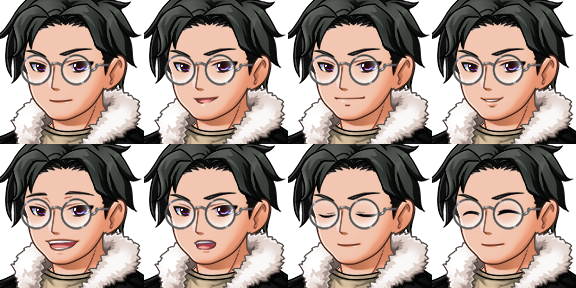
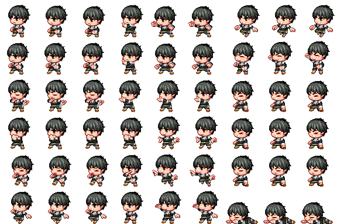
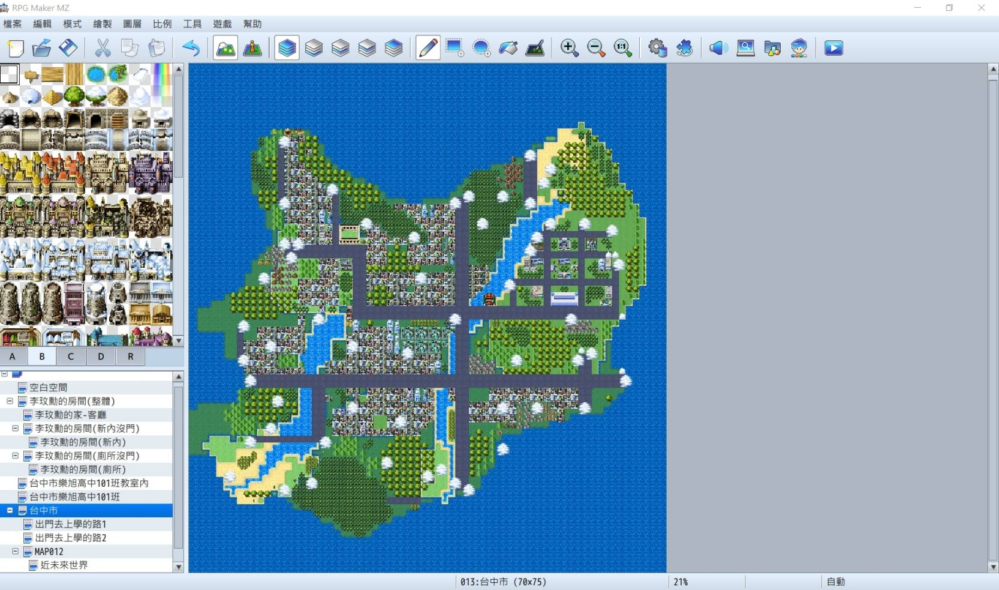
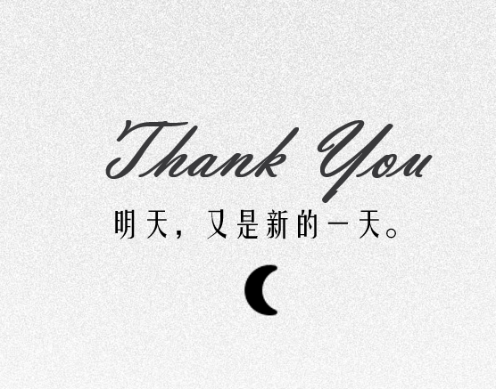
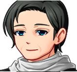
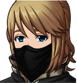

有群體出沒的地方「霸凌」與「排擠」就不會消失。
受害者就像是白羊群中最醒目的黑羊，一舉一動都是被人挑起攻擊的原因。而霸凌者也不見得是壞人，卻被群體意識逼迫，成為持刀的屠夫，在一旁的閒雜人等則成了沉默的白羊不敢吭聲。這場好人欺負好人的困局便構成了「黑羊效應」…
受害者就像是白羊群中最醒目的黑羊，一舉一動都是被人挑起攻擊的原因。而霸凌者也不見得是壞人，卻被群體意識逼迫，成為持刀的屠夫，在一旁的閒雜人等則成了沉默的白羊不敢吭聲。這場好人欺負好人的困局便構成了「黑羊效應」…
什麼樣的遊戲?
偏向黑暗的世界觀、奇幻超現實色彩的設定，架空現實，但是參考事件是真實發生的。以及角色的成長故事，整合入家庭暴力、校園霸凌，善良幻滅的成長歷程，反諷現今社會的章節敘事故事

透過遊戲表達?
我們想要透過敘事性遊戲來呼籲對於家庭暴力請勿忽視、反對校園霸凌、反應現今網路暴力行為事件核心，遊戲雖然是架空的世界發生的但所有的事件是親生或是新聞的事件所擷取下來的。
角色設定:主要角色
主角：李玟勳
職業:高中生
性別:男姓 膚色:黃皮膚
身體標記(手術痕、疤痕、痣……):因家暴會有瘀青所以常穿長袖衣服
學歷:台中市樂旭高中
口音:台灣腔、閩南中部腔(海線) 聲音與表情:少年男孩聲
出生地:台灣，台中市。居住地:台灣，台中市，南區。
興趣:喜歡攝影 職業:高中生
經濟狀況:目前是學生暫無經濟能力，經濟來源由父親提供。健康狀況:意外死亡
宗教:無特定宗教信仰，因母親的宗教信仰而對於宗教厭煩
衣著:平日因為上課所以都是穿著長袖校服+長袖褲子+黑皮鞋，假日是長T恤+長牛仔褲+拖鞋﹑在空白空間是短袖長版衣
體態(習慣抬頭、習慣駝背……):因長期受到家暴、霸凌的關係，習慣低頭看地板
自信/自卑:因長期受到家暴、霸凌的關係，自卑。
婚姻狀態(對性的態度/支持婚前性行為？):無結婚，但性向是pansexuel(le)
喜歡的音樂、電視、電影、遊戲、偶像:受到父親的影響喜歡80年代台灣的音樂、喜歡看娛樂性的電視、喜歡看推理解謎的電影、喜歡玩SRPPG、SLG的遊戲類別、喜歡的偶像是張雨生

性別:男性 膚色:黃皮膚 身體標記(手術痕、疤痕、痣……):無 學歷:碩士
口音:台灣腔、閩南中部腔(海線)、英國腔(英語)、 聲音與表情:很有磁性
出生地:台灣，台中市。 居住地:台灣，台中市，南區。
政治觀:右派 興趣:喜歡釣魚 職業:商務人員
經濟狀況:目前是家中經濟中柱。 健康狀況:活 宗教:佛教
衣著:平日成套西裝，假日釣魚裝+短褲
體態(習慣抬頭、習慣駝背……):工作關係，需要保持體態
自信/自卑:在職場上是自信但在家庭自卑 婚姻狀態(對性的態度/支持婚前性行為？):與徐寧秋有婚姻狀態，但婚姻狀態不穩定
喜歡的音樂、電視、電影、遊戲、偶像:喜歡80年代台灣的音樂、喜歡看政論性的電視、喜歡看愛情的電影、不太喜歡玩遊戲、喜歡的偶像是bon jovi
主角的爸爸：李慶豐
性別:男性 膚色:黃皮膚 身體標記(手術痕、疤痕、痣……):無 學歷:碩士
口音:台灣腔、閩南中部腔(海線)、英國腔(英語)、 聲音與表情:很有磁性
出生地:台灣，台中市。 居住地:台灣，台中市，南區。
政治觀:右派 興趣:喜歡釣魚 職業:商務人員
經濟狀況:目前是家中經濟中柱。 健康狀況:活 宗教:佛教
衣著:平日成套西裝，假日釣魚裝+短褲
體態(習慣抬頭、習慣駝背……):工作關係，需要保持體態
自信/自卑:在職場上是自信但在家庭自卑 婚姻狀態(對性的態度/支持婚前性行為？):與徐寧秋有婚姻狀態，但婚姻狀態不穩定
喜歡的音樂、電視、電影、遊戲、偶像:喜歡80年代台灣的音樂、喜歡看政論性的電視、喜歡看愛情的電影、不太喜歡玩遊戲、喜歡的偶像是bon jovi
主角的媽媽:徐寧秋
膚色:黃皮膚 身體標記(手術痕、疤痕、痣……):左眼下有一顆痣 學歷:高中
口音:台灣腔 聲音與表情:語潤腔圓，表情請參考如圖三。 出生地:台灣，台中市。 居住地:台灣，台中市，南區。
政治觀:左派 興趣:唱歌 職業:全職家庭主婦
經濟狀況:目前無經濟能力，經濟來源由父親提供。 健康狀況:死亡 宗教:邱老師的宗教團體 衣著:因手上的傷口長期穿著長袖，戴黑手套 體態(習慣抬頭、習慣駝背……):纖瘦但力氣大
自信/自卑:自信，甚至有點強勢
婚姻狀態(對性的態度/支持婚前性行為？):
經
喜歡的音樂、電視、電影、遊戲、偶像:喜歡流行華語音樂、喜歡看宗教性的電視、喜歡看恐怖驚悚的電影、喜歡玩手機遊戲、喜歡的偶像是鄭爽
律師:宋恆
性別:男性 膚色:黃皮膚
身體標記(手術痕、疤痕、痣……):雙手有無線條自殘的舊傷痕
學歷:碩士 口音:台灣腔、閩南中部腔(海線)，客家腔(四縣腔)、 英國腔(英語)、法語、德語，西班牙文 聲音與表情:壯年低音男聲
出生地:美國 居住地:台北市 政治觀:左派 興趣:騎馬
職業:律師 經濟狀況:豐厚 健康狀況:活 宗教:天主教
衣著:平日成套西裝，休假或是探訪未成年則是穿T恤+工裝褲 體態(習慣抬頭、習慣駝背……):慣用手是左手 自信/自卑:自信
婚姻狀態(對性的態度/支持婚前性行為？):已婚
喜歡的音樂、電視、電影、遊戲、偶像:並無透漏
角色設定: 配角
練舞團:謝夏
職業:高中生
姓名:謝夏 性別:女性 膚色:黃皮膚
身體標記(手術痕、疤痕、痣……):無 學歷:台中市樂旭高中 口音:台灣腔、閩南中部腔(海線) 聲音與表情:尖銳女孩聲
出生地:台灣，台中市。 居住地:台灣，台中市，南區。 興趣:喜歡跳舞 職業:高中生
經濟狀況:目前是學生暫無經濟能力，經濟來源由家庭提供。 健康狀況:活 宗教:無 衣著:校服 體態(習慣抬頭、習慣駝背……):纖瘦身材 自信/自卑:自信
婚姻狀態(對性的態度/支持婚前性行為？):無
喜歡的音樂、電視、電影、遊戲、偶像:喜歡流行英語音樂、肥皂劇電視、解謎電影、不喜歡遊戲、偶像是男偶像都喜歡
練舞團：朱雲笠
職業:高中生
性別:男性 膚色:黃皮膚 身體標記(手術痕、疤痕、痣……):無 學歷:台中市樂旭高中 br>口音:台灣腔 聲音與表情:低沉男孩聲 出生地:台灣，台中市。 居住地:台灣，台中市，南區。
興趣:喜歡跳舞 職業:高中生 經濟狀況:目前是學生暫無經濟能力，經濟來源由家庭提供。 健康狀況:活 宗教:無 衣著:校服 體態(習慣抬頭、習慣駝背……):強壯的身材 自信/自卑:自卑
婚姻狀態(對性的態度/支持婚前性行為？):無
喜歡的音樂、電視、電影、遊戲、偶像:喜歡BTS的音樂、不喜歡看電視、不喜歡電影、喜歡玩射擊遊戲、偶像是BTS
練舞團:林怡君
職業:高中生
性別:女性 膚色:黃皮膚 身體標記(手術痕、疤痕、痣……):無 學歷:台中市樂旭高中
口音:台灣腔、 聲音與表情:娃娃音女孩聲 出生地:台灣，台中市。 居住地:台灣，台中市，南區。
興趣:喜歡跳舞 職業:高中生
經濟狀況:目前是學生暫無經濟能力，經濟來源由家庭提供。 健康狀況:活 宗教:無 衣著:校服 體態(習慣抬頭、習慣駝背……):纖瘦身材，選秀小姐 自信/自卑:自信
婚姻狀態(對性的態度/支持婚前性行為？):無
喜歡的音樂、電視、電影、遊戲、偶像:喜歡流行華語音樂、愛情類電視、戀愛類電影、戀愛類遊戲、偶像是Blueburn
國文老師:王樞涓
職業:老師
姓名:王樞涓 性別:女性 膚色:黃皮膚 身體標記(手術痕、疤痕、痣……):無
學歷:研究所 口音:台灣腔、閩南中部腔(海線)、英國腔(英語)、法語、德語 聲音與表情:甜美女高音聲，表情請參考如圖七。 出生地:台灣，台中市。 居住地:台灣，台中市，南區。
興趣:閱讀書籍 政治觀:右派 職業:教師 經濟狀況:中上 健康狀況:活 宗教:基督教
衣著:時尚精品 體態(習慣抬頭、習慣駝背……):纖瘦身材 自信/自卑:自信 婚姻狀態(對性的態度/支持婚前性行為？):已婚。
喜歡的音樂、電視、電影、遊戲、偶像:無
宗教團體:邱老師
職業:騙子
姓名:邱美昭 性別:男性 膚色:黃皮膚 身體標記(手術痕、疤痕、痣……):
臉上右邊有一道割痕，在雙手上割出十元大小的圓形傷口來欺騙信徒們 學歷:高職 口音:香港腔 聲音與表情:很有磁性，表情請參考如圖四。 出生地:香港
居住地:台灣，台中市，南區。 政治觀:左派 興趣:研讀宗教 職業:宗教團體的老師(其實是騙子)
經濟狀況:豐厚，來自信徒的"捐贈" 健康狀況:活
宗教:「家庭、婚姻，是台灣特殊宗教團體會形成的重要因素。」邱老師的宗教團體的終旨利用六十籤詩。讓信徒認為籤詩上面的詩是神明與自己對話如抽到下籤可燒毀與水融合喝下讓信徒的到救贖 衣著:墨綠色長袍 體態(習慣抬頭、習慣駝背……):強壯、有威嚴、奸詐 自信/自卑:自信
婚姻狀態(對性的態度/支持婚前性行為？):無，支持婚前性行為
喜歡的音樂、電視、電影、遊戲、偶像:無

記者-蔡桑
姓名:蔡桑 性別:男性 口音:台灣腔 聲音與表情:中年男孩聲，表情請參考如圖九。 職業:記者
記者-蔡桑
職業:記者
姓名:蔡桑 性別:男性 口音:台灣腔 聲音與表情:中年男孩聲，表情請參考如圖九。 職業:記者
記者-軒桑
職業:記者
姓名:軒桑 性別:男性 口音:台灣腔 聲音與表情:中年菸酒桑男聲，表情請參考如圖十。 職業:記者
警察-曉華
職業:警察
姓名:曉華 性別:男姓 膚色:黃皮膚，曬黑 口音:台灣腔 聲音與表情:壯年陽剛男聲，表情請參考如圖十一。 職業:警察
警察:陳慶興
職業:警察隊長
姓名:陳慶興 性別:男性 膚色:黃皮膚 身體標記(手術痕、疤痕、痣……):鬍鬚 口音:台灣腔、閩南中部腔(海線) 聲音與表情:壯年清爽男聲 職業:警察隊長
樹莓娛樂的記者陳小姐
職業:記者
姓名:陳小姐 性別:女性 口音:台灣腔 聲音與表情:中年娃娃音聲，表情請參考如圖十四。 職業:記者
嵐衫電視的記者許小姐
姓名:許小姐 性別:女性 口音:廣東腔 聲音與表情:青年甜美音聲，表情請參考如圖十五。 職業:記者
粽聲雜誌的記者廖先生
職業:記者
姓名:廖先生 性別:女性 口音:閩南中部腔(海線) 聲音與表情:壯年粗曠男聲，表情請參考如圖十六。 職業:記者
黑影
職業:高中生
姓名:李玟勳 性別:男姓 膚色:黃皮膚 身體標記(手術痕、疤痕、痣……):因家暴會有瘀青所以常穿長袖衣服
學歷:台中市樂旭高中 口音:台灣腔、閩南中部腔(海線) 聲音與表情:少年男孩聲，表情請參考如圖十七。 出生地:台灣，台中市。 居住地:台灣，台中市，南區。 興趣:喜歡攝影 職業:高中生
經濟狀況:目前是學生暫無經濟能力，經濟來源由父親提供。 健康狀況:意外死亡 宗教:無特定宗教信仰，因母親的宗教信仰而對於宗教厭煩
衣著:平日因為上課所以都是穿著長袖校服+長袖褲子+黑皮鞋，假日是長T恤+長牛仔褲+拖鞋﹑在空白空間是短袖長版衣 體態(習慣抬頭、習慣駝背……):因長期受到家暴、霸凌的關係，習慣低頭看地板 自信/自卑:因長期受到家暴、霸凌的關係，自卑。
婚姻狀態(對性的態度/支持婚前性行為？):無結婚，但性向是pansexuel(le)
喜歡的音樂、電視、電影、遊戲、偶像:受到父親的影響喜歡80年代台灣的音樂、喜歡看娛樂性的電視、喜歡看推理解謎的電影、喜歡玩SRPPG、SLG的遊戲類別、喜歡的偶像是張雨生
遊戲圖標設計

設計初期，先是構想出一隻羊的形狀但中期討論說可以半人半羊的對稱圖來對應主角，半羊在遊戲裡擔任任人宰割的白羊而另一半人是根據主角的人物造型繪製出來。到了後期修改過幾次稿後都覺得畫面太過單調所以加入數顆大大小小羊的眼睛讓畫面有壓迫感感覺有人一直盯著看，也符合了在黑羊效應中孤獨的黑羊遭受白羊冷眼旁觀和屠夫的群起圍攻

遊戲標題文字的字型
• 遊戲英文名是Adobe Illustrator手寫
• 其次是封面主選單的字體是為了符合我們偏暗黑世界觀所去尋早出偏手寫卻不太正 楷的字型，最後是使用怨靈體以PNG檔的模式去呈現。
• 最後是日記的字體是想要仿照高中生的字體,所以才選用萌萌哒情根深种字體這種字 體偏手寫風又符合我們的專案風格但缺點是有缺字所以使用時會以日記內容png檔 模式呈現。